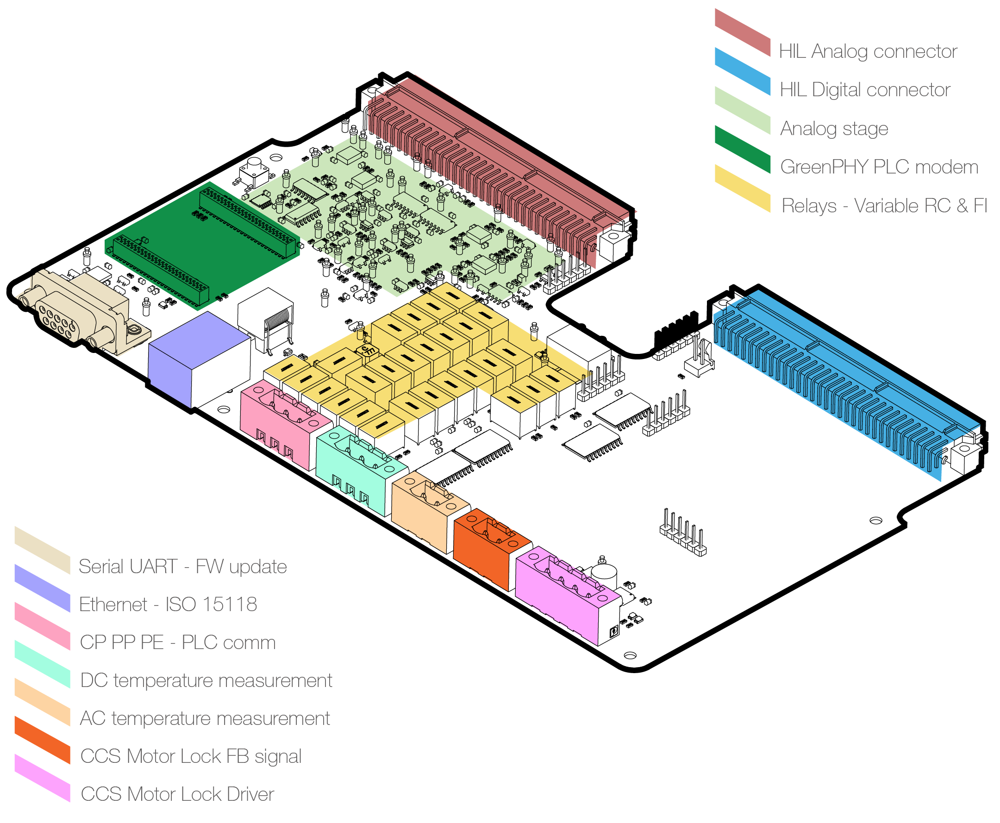
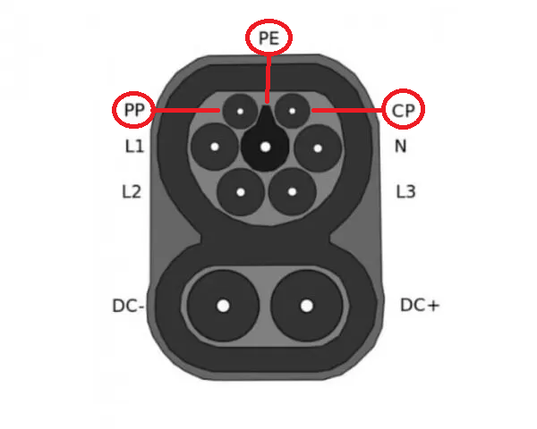
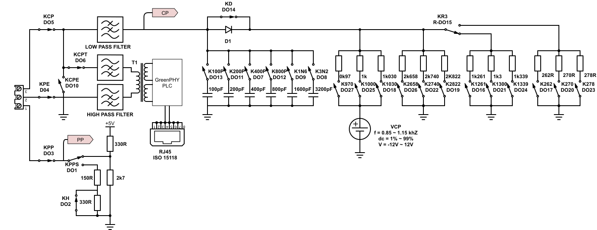

Detailed description
Detailed description of the HIL CCS interface
HIL CCS Interface Layout
The board features the following key sections, as shown in Figure 1.
- HIL Analog connector
- HIL Digital connector
- Analog stage
- GreenPHY module
- Resistor and capacitors emulation
- UART for firmware update
- 10/100 Mbps Fast Ethernet
- CCS CP-PP-PE signals
- DC pins temperature measurement
- AC pin temperature measurement
- Motor lock feedback
- Motor lock control driver

Physical Installation
The GreenPHY module comes already mounted in the CCS interface board. This is shipped with the pre-requested configuration (for EV or EVSE). Further changes to the configuration can be done via Ethernet using the plctool library from the Qualcomm Atheros Open Powerline Toolkit.
Communication Connection
In order to test the ISO 15118 vehicle to grid communication, the following terminals of a charging plug (e.g. Figure 2) must be connected to the corresponding CP PP PE - PLC connector on the CCS Interface:
- Control Pilot (CP)
- Proximity Pilot (PP)
- Protective Earth (PE)

Connection to the following charging plugs is supported:
- CCS Combo Type 1
- CCS Combo Type 2
- J1772
- Mennekes Type 2
- Supercharger
Ethernet Connection
For the connection of the converted PLC signal to Typhoon HIL simulator devices, an RJ45 connector is placed directly on the interface board nearby the GreenPHY module.
Signal Path Switching
Figure 3 shows the various signal paths and switching options. The Typhoon HIL CCS interface has circuits to simulate either the electric vehicle supply equipment (EVSE) or the electric vehicle (EV). To vary between these two possibilities, the signal path must be set by switching the relevant relays. The numbering at the relay’s schematic indicated which Digital Output from the HIL device is associated with the respective relays. The position shown is the default configuration, without any stimulation from the HIL device.

Stimulation of Parameters
The stimulation parameters for the PWM communication (frequency, duty cycle, positive control pilot voltage, negative control pilot voltage) are controlled via analog outputs and can be controlled from the model in Typhoon HIL Control Center. The measurement of values for all PWM parameters and the proximity contact are available as analog inputs. Alternatively, PWM signals can be generated directly from Typhoon HIL Control Center with the PWM modulator component. These values are measured by the analog circuits in the CCS board and converted into DC voltage values, as listed in Table 1. The relays are controllable via digital outputs.
| Setting | Analog/Digital IO | R/W | Actual Value (HIL IO) | Converted Value |
|---|---|---|---|---|
| Relay function | DO1 … DO27 | W | 0 = open, 1 = closed | -- |
| PP voltage measurement | Analog Input 6 (AI6) | R | 0 ... 5V | -- |
| CP PWM frequency measurement | Analog Input 4 (AI4) | R | 0.25V ... 2.5V ... 3V | 100 Hz … 1000 Hz ... 1200 Hz |
| CP PWM duty cycle measurement | Analog Input 5 (AI5) | R | 0V ... 10V | |
| CP PWM high voltage measurement | Analog Input 1 (AI1) | R | 0V ... 10V | |
| CP PWM low voltage measurement | Analog Input 2 (AI2) | R | 0V ... 10V | |
| CP PWM frequency stimulation | Analog Output 4 (AO4) | W | -10V ... 0V ... 10V | 850 Hz … 1000 Hz … 1160 Hz |
| CP PWM duty cycle stimulation | Analog Output 3 (AO3) | W | -9.95V ... 0V ... 9.95V | 1.5% … 50% … 99% |
| CP PWM high voltage stimulation | Analog Output 2 (AO2) | R | 0V … 5V … 10V | 0V … 5V … 15V |
| CP PWM low voltage stimulation | Analog Output 1 (AO1) | R | 0V … 5V … 10V | -5V … -10V … -15V |
Fault Simulation
The CCS module features various error simulation and parameter variation possibilities:
- Simulation of broken wire
- Simulation of short circuit between control pilot (CP) and protective earth (PE)
- Variation of PWM frequency, PWM duty cycle, and PWM high and low level
- Variation of capacitive load
- Variation of resistors between minimum, maximum, and nominal values
The variation range of the parameters and values can be found in the Technical Data section. The simulation of short and broken wires, the variation of the resistor values, and the capacitive load are performed by relays. The necessary relay settings can be found in Figure 3.
CCS Board LEDs
The application board has a total of three LEDs. Two of those indicate the power supply status: +15V and -15V, indicating if the board is operational. The third LED is located between the Green PHY module and the DB9 connector, named ACT. When the ACT LED is lit, it means that the SLAC protocol is working and that there is an Ethernet network connection between the SECC and EVCC. The ACT LED will blink every time an ISO 15118 packet is sent or received by the HIL device.
Connectors and Main Components
Figure 1 depicts the main components of the CCS interface board. The board should be connected to the HIL device IO terminals, which will provide proper power supply and the connections for measurement, stimulation, and switching of control pilot, proximity pilot, and relays.
The CP PE PP - PLC communication plug should be connected to the device under test (EVCC or SECC) as described in the Communication Connection section. The RJ45 Ethernet connector is connected to the bottom HIL Ethernet port. The UART connector is optional and used for firmware updates and GreenPHY microcontroller flashing.
Technical Data
| Parameter | Min | Max |
|---|---|---|
| Supply voltage (via the HIL device IO connector) | 0 V | 5 V |
| Proximity Contact Measurement | 0 V | 5 V |
| Control Pilot PWM Stimulation | ||
| Voltage | -15 V | +15 V |
| Frequency | 850 Hz | 1160 Hz |
| Duty Cycle | 1.5% | 99% |
| Control Pilot PWM Measurement | ||
| Voltage | -15 V | +15 V |
| Frequency | 100 Hz | 1200 Hz |
| Duty Cycle | 1% | 99% |